Flip sheet 2026-10-30 — OFF | ON | pro
Layout flags built OFF, each rendered where it changes stitches beside the professional's file for the same job (hat preset at the pro's width). 40 px/mm: a 0.4 mm thread is 16 px. The flips are Kent's.
Read this first. ON also turns on fill_section_travel, which Kent held on 2026-10-27. On today's main (fill_bridge_cut_exposed and fill_seam_order ON, #1198) the switch's gain is mostly gone: 17 jobs, cuts 399 -> 397 (pro 409), exposed travel 509 -> 506 mm, bare thread unchanged, whole-job CPU +14%. Three Becker jobs GAIN a cut.
Why. _order_for_seams runs after _plan_sections and re-sequences every section, so the order the planner priced is not the order that sews. Same 10 jobs, plan replayed: seam order ON 240 -> 238 cuts; seam order OFF 247 -> 233. Plan CPU on those 10 jobs +31% (379 -> 497 s). The +16% quoted on 2026-10-29 was the older base over 17 jobs.
Read the trims column with care. The pro's trims in the stats line come from pystitch's record count, and becker_beanie has no DST (48 is a PES count). The right-hand 'cuts inside one piece / all cuts' figure is the one reader on both sides.
| flag (PR) | fixture | OFF | ON | pro | needle points changed |
|---|---|---|---|---|---|
fill_section_cuts_first (#1193, LAYOUT) | becker_hat_small | 10,452 st / 11 tr / 1 cc / 4 / 11 | 10,496 st / 12 tr / 1 cc / 5 / 12 | 8,694 st / 11 tr / 4 cc / 2 / 10 | 302 |
fill_section_cuts_first (#1193, LAYOUT) | becker_chest_small | 10,211 st / 11 tr / 1 cc / 4 / 11 | 10,249 st / 12 tr / 1 cc / 5 / 12 | 8,694 st / 12 tr / 3 cc / 2 / 11 | 308 |
fill_section_cuts_first (#1193, LAYOUT) | becker_hat_large | 16,262 st / 11 tr / 1 cc / 2 / 11 | 16,176 st / 12 tr / 1 cc / 3 / 12 | 12,356 st / 10 tr / 4 cc / 1 / 9 | 220 |
fill_section_cuts_first (#1193, LAYOUT) | becker_lc_large | 14,669 st / 15 tr / 1 cc / 6 / 15 | 14,681 st / 13 tr / 1 cc / 4 / 13 | 11,274 st / 12 tr / 3 cc / 2 / 11 | 66 |
fill_section_cuts_first (#1193, LAYOUT) | becker_beanie | 13,915 st / 14 tr / 2 cc / 6 / 14 | 13,916 st / 14 tr / 2 cc / 6 / 14 | 11,412 st / 48 tr / 5 cc / 0 / 4 | 27 |
fill_section_cuts_first (#1193, LAYOUT) | mfab_hat | 21,321 st / 25 tr / 2 cc / 18 / 25 | 21,403 st / 24 tr / 2 cc / 17 / 24 | 17,568 st / 19 tr / 4 cc / 3 / 18 | 122 |
fill_section_cuts_first (#1193, LAYOUT) | mfab_lc | 18,735 st / 21 tr / 2 cc / 14 / 21 | 18,676 st / 21 tr / 2 cc / 14 / 21 | 15,786 st / 20 tr / 4 cc / 3 / 19 | 2,441 |
fill_section_cuts_first (#1193, LAYOUT) | precision_drone | 14,778 st / 93 tr / 9 cc / 22 / 93 | 14,855 st / 91 tr / 9 cc / 20 / 91 | 14,552 st / 59 tr / 22 cc / 20 / 58 | 195 |
fill_section_cuts_first (#1193, LAYOUT) | proseal_hat | 6,347 st / 36 tr / 4 cc / 9 / 36 | 6,347 st / 36 tr / 4 cc / 9 / 36 | 5,894 st / 54 tr / 4 cc / 12 / 53 | none (no change) |
fill_section_cuts_first (#1193, LAYOUT) | proseal_beanie | 8,107 st / 28 tr / 5 cc / 7 / 28 | 8,107 st / 28 tr / 5 cc / 7 / 28 | 7,117 st / 48 tr / 5 cc / 16 / 47 | none (no change) |
fill_section_cuts_first (#1193, LAYOUT) | hotel_fremont_hat | 15,865 st / 25 tr / 3 cc / 4 / 25 | 15,865 st / 25 tr / 3 cc / 4 / 25 | 17,067 st / 21 tr / 10 cc / 1 / 20 | none (no change) |
fill_section_cuts_first (#1193, LAYOUT) | hotel_fremont_patch | 14,856 st / 20 tr / 3 cc / 6 / 20 | 14,856 st / 20 tr / 3 cc / 6 / 20 | 15,458 st / 21 tr / 8 cc / 1 / 20 | none (no change) |
fill_section_cuts_first (#1193, LAYOUT) | gaulke_roofing_hat | 7,446 st / 30 tr / 1 cc / 3 / 30 | 7,446 st / 30 tr / 1 cc / 3 / 30 | 6,138 st / 42 tr / 0 cc / 0 / 41 | none (no change) |
fill_section_cuts_first (#1193, LAYOUT) | gaulke_roofing_lc | 5,778 st / 23 tr / 1 cc / 1 / 23 | 5,778 st / 23 tr / 1 cc / 1 / 23 | 5,151 st / 42 tr / 0 cc / 0 / 41 | none (no change) |
fill_section_cuts_first (#1193, LAYOUT) | bridge_hat | 8,474 st / 16 tr / 5 cc / 3 / 16 | 8,476 st / 16 tr / 5 cc / 3 / 16 | 6,650 st / 20 tr / 4 cc / 3 / 19 | 2 |
fill_section_cuts_first (#1193, LAYOUT) | bridge_lc | 11,322 st / 17 tr / 5 cc / 2 / 17 | 11,322 st / 17 tr / 5 cc / 2 / 17 | 8,535 st / 20 tr / 4 cc / 2 / 19 | none (no change) |
fill_section_cuts_first (#1193, LAYOUT) | tires_hat_3d | 4,544 st / 3 tr / 0 cc / 0 / 3 | 4,544 st / 3 tr / 0 cc / 0 / 3 | 5,555 st / 10 tr / 1 cc / 5 / 9 | none (no change) |
fill_section_cuts_first (PR #1193) LAYOUT
LAYOUT: judged from these renders (Kent 2026-10-22). Sets {"photo_prep_background_removal_timeout_s": 900, "extra": {"fill_section_cuts_first": true}}.
| fixture | engine | OFF | ON | pro | change | travel OFF (mm) | travel ON (mm) |
|---|---|---|---|---|---|---|---|
| becker_hat_small | engine 992770e3 | 10,452 st · 11 tr · 1 cc | 10,496 st · 12 tr · 1 cc | 8,694 st · 11 tr · 4 cc | 302 points | exp 21.7 · bare 4.61/3.69/3.28 · off-body 0.0 | exp 24.2 · bare 4.61/3.69/3.28 · off-body 0.0 |
| becker_chest_small | engine 992770e3 | 10,211 st · 11 tr · 1 cc | 10,249 st · 12 tr · 1 cc | 8,694 st · 12 tr · 3 cc | 308 points | exp 21.3 · bare 4.82/4.10/3.69 · off-body 0.0 | exp 23.9 · bare 4.82/4.10/3.69 · off-body 0.0 |
| becker_hat_large | engine 992770e3 | 16,262 st · 11 tr · 1 cc | 16,176 st · 12 tr · 1 cc | 12,356 st · 10 tr · 4 cc | 220 points | exp 23.1 · bare 0.10/0.00/0.00 · off-body 0.0 | exp 23.1 · bare 0.10/0.00/0.00 · off-body 0.0 |
| becker_lc_large | engine 992770e3 | 14,669 st · 15 tr · 1 cc | 14,681 st · 13 tr · 1 cc | 11,274 st · 12 tr · 3 cc | 66 points | exp 31.1 · bare 0.40/0.20/0.10 · off-body 0.0 | exp 31.1 · bare 0.40/0.20/0.10 · off-body 0.0 |
| becker_beanie | engine 992770e3 | 13,915 st · 14 tr · 2 cc | 13,916 st · 14 tr · 2 cc | 11,412 st · 48 tr · 5 cc | 27 points | exp 105.8 · bare 14.84/0.00/0.00 · off-body 3.0 | exp 105.8 · bare 14.84/0.00/0.00 · off-body 3.0 |
| mfab_hat | engine 992770e3 | 21,321 st · 25 tr · 2 cc | 21,403 st · 24 tr · 2 cc | 17,568 st · 19 tr · 4 cc | 122 points | exp 6.0 · bare 0.00/0.00/0.00 · off-body 0.0 | exp 6.0 · bare 0.00/0.00/0.00 · off-body 0.0 |
| mfab_lc | engine 992770e3 | 18,735 st · 21 tr · 2 cc | 18,676 st · 21 tr · 2 cc | 15,786 st · 20 tr · 4 cc | 2,441 points | exp 19.8 · bare 0.00/0.00/0.00 · off-body 0.0 | exp 10.8 · bare 0.00/0.00/0.00 · off-body 0.0 |
| precision_drone | engine 992770e3 | 14,778 st · 93 tr · 9 cc | 14,855 st · 91 tr · 9 cc | 14,552 st · 59 tr · 22 cc | 195 points | exp 23.6 · bare 2.20/1.79/0.95 · off-body 0.0 | exp 24.6 · bare 2.20/1.79/0.95 · off-body 0.0 |
| proseal_hat | engine 992770e3 | 6,347 st · 36 tr · 4 cc | 6,347 st · 36 tr · 4 cc | 5,894 st · 54 tr · 4 cc | none | exp 17.8 · bare 1.56/1.14/0.61 · off-body 0.0 | exp 17.8 · bare 1.56/1.14/0.61 · off-body 0.0 |
| proseal_beanie | engine 992770e3 | 8,107 st · 28 tr · 5 cc | 8,107 st · 28 tr · 5 cc | 7,117 st · 48 tr · 5 cc | none | exp 150.5 · bare 100.25/0.00/0.00 · off-body 6.7 | exp 150.5 · bare 100.25/0.00/0.00 · off-body 6.7 |
| hotel_fremont_hat | engine 992770e3 | 15,865 st · 25 tr · 3 cc | 15,865 st · 25 tr · 3 cc | 17,067 st · 21 tr · 10 cc | none | exp 9.1 · bare 0.00/0.00/0.00 · off-body 0.0 | exp 9.1 · bare 0.00/0.00/0.00 · off-body 0.0 |
| hotel_fremont_patch | engine 992770e3 | 14,856 st · 20 tr · 3 cc | 14,856 st · 20 tr · 3 cc | 15,458 st · 21 tr · 8 cc | none | exp 12.4 · bare 0.00/0.00/0.00 · off-body 0.0 | exp 12.4 · bare 0.00/0.00/0.00 · off-body 0.0 |
| gaulke_roofing_hat | engine 992770e3 | 7,446 st · 30 tr · 1 cc | 7,446 st · 30 tr · 1 cc | 6,138 st · 42 tr · 0 cc | none | exp 16.7 · bare 5.99/5.26/4.22 · off-body 0.0 | exp 16.7 · bare 5.99/5.26/4.22 · off-body 0.0 |
| gaulke_roofing_lc | engine 992770e3 | 5,778 st · 23 tr · 1 cc | 5,778 st · 23 tr · 1 cc | 5,151 st · 42 tr · 0 cc | none | exp 10.6 · bare 7.22/6.51/5.05 · off-body 0.0 | exp 10.6 · bare 7.22/6.51/5.05 · off-body 0.0 |
| bridge_hat | engine 992770e3 | 8,474 st · 16 tr · 5 cc | 8,476 st · 16 tr · 5 cc | 6,650 st · 20 tr · 4 cc | 2 points | exp 10.5 · bare 0.00/0.00/0.00 · off-body 0.0 | exp 10.5 · bare 0.00/0.00/0.00 · off-body 0.0 |
| bridge_lc | engine 992770e3 | 11,322 st · 17 tr · 5 cc | 11,322 st · 17 tr · 5 cc | 8,535 st · 20 tr · 4 cc | none | exp 15.5 · bare 0.00/0.00/0.00 · off-body 0.0 | exp 15.5 · bare 0.00/0.00/0.00 · off-body 0.0 |
| tires_hat_3d | engine 992770e3 | 4,544 st · 3 tr · 0 cc | 4,544 st · 3 tr · 0 cc | 5,555 st · 10 tr · 1 cc | none | exp 13.2 · bare 9.03/5.31/2.30 · off-body 0.0 | exp 13.2 · bare 9.03/5.31/2.30 · off-body 0.0 |
fill_section_cuts_first (PR #1193) · becker_hat_small at 76.5 mm · engine 992770e3
⚠ A cfg.extra key. ON also turns on fill_section_travel (held 2026-10-27): the fill planner's orders are priced with the travel under rows still to come free, so a fewer-cut order is no longer refused for hidden stitches. It still may not cut more or lay more on finished fill. Both arms pin the rembg timeout at 900 s.
cuts inside one piece / all cuts. 302 needle points differ, 90 in this 18 x 11 mm crop at [-15.4, -23.7, 2.6, -12.7] mm (plan frame). Sets {"photo_prep_background_removal_timeout_s": 900, "extra": {"fill_section_cuts_first": true}}.
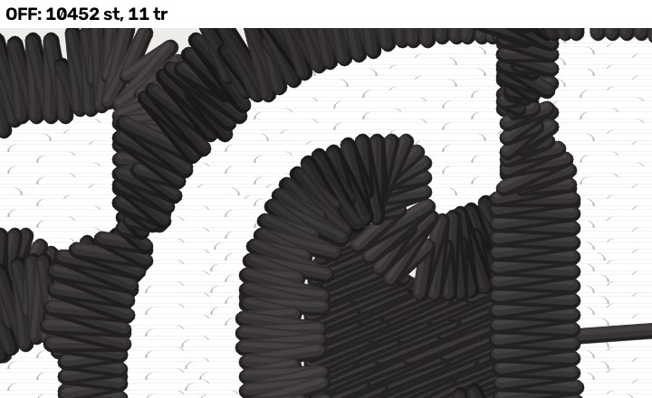
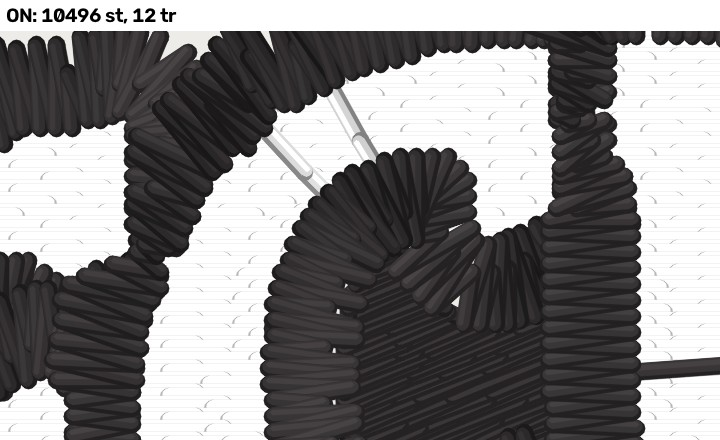

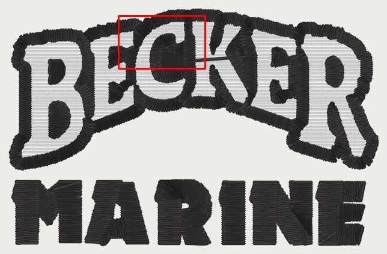
fill_section_cuts_first (PR #1193) · becker_chest_small at 76.5 mm · engine 992770e3
⚠ A cfg.extra key. ON also turns on fill_section_travel (held 2026-10-27): the fill planner's orders are priced with the travel under rows still to come free, so a fewer-cut order is no longer refused for hidden stitches. It still may not cut more or lay more on finished fill. Both arms pin the rembg timeout at 900 s.
cuts inside one piece / all cuts. 308 needle points differ, 92 in this 18 x 11 mm crop at [-17.4, -23.7, 0.6, -12.7] mm (plan frame). Sets {"photo_prep_background_removal_timeout_s": 900, "extra": {"fill_section_cuts_first": true}}.
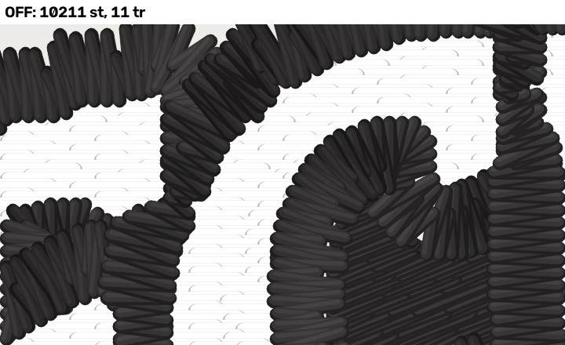
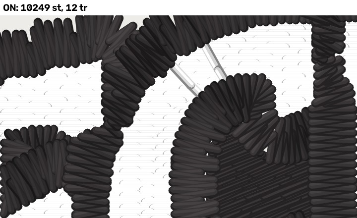

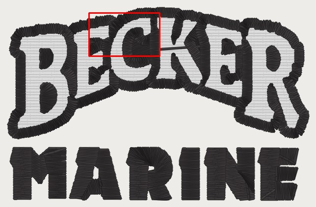
fill_section_cuts_first (PR #1193) · becker_hat_large at 101.9 mm · engine 992770e3
⚠ A cfg.extra key. ON also turns on fill_section_travel (held 2026-10-27): the fill planner's orders are priced with the travel under rows still to come free, so a fewer-cut order is no longer refused for hidden stitches. It still may not cut more or lay more on finished fill. Both arms pin the rembg timeout at 900 s.
cuts inside one piece / all cuts. 220 needle points differ, 56 in this 18 x 11 mm crop at [-29.4, -29.8, -11.4, -18.8] mm (plan frame). Sets {"photo_prep_background_removal_timeout_s": 900, "extra": {"fill_section_cuts_first": true}}.
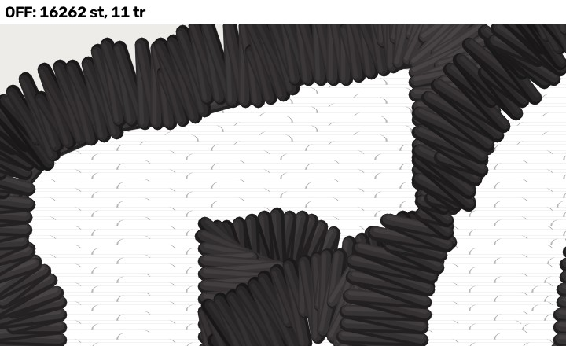

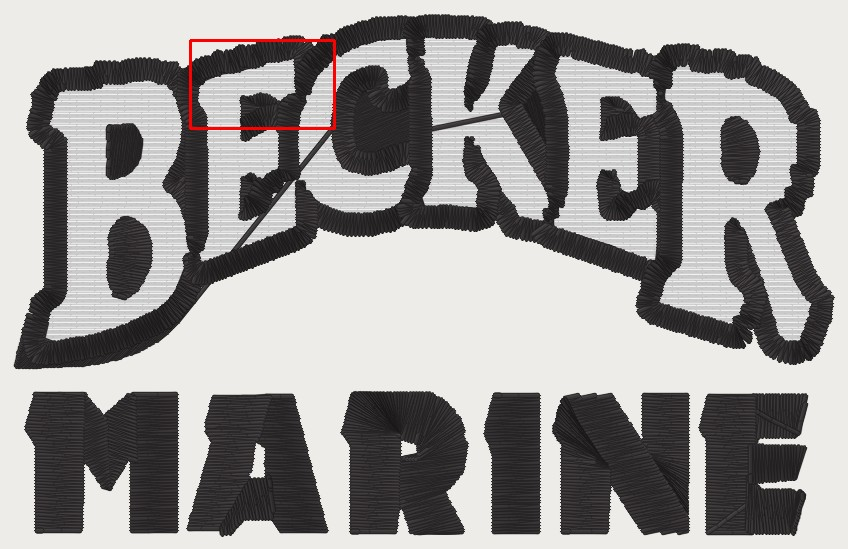
fill_section_cuts_first (PR #1193) · becker_lc_large at 95.7 mm · engine 992770e3
⚠ A cfg.extra key. ON also turns on fill_section_travel (held 2026-10-27): the fill planner's orders are priced with the travel under rows still to come free, so a fewer-cut order is no longer refused for hidden stitches. It still may not cut more or lay more on finished fill. Both arms pin the rembg timeout at 900 s.
cuts inside one piece / all cuts. 66 needle points differ, 29 in this 18 x 11 mm crop at [-10.1, -16.9, 7.9, -5.9] mm (plan frame). Sets {"photo_prep_background_removal_timeout_s": 900, "extra": {"fill_section_cuts_first": true}}.
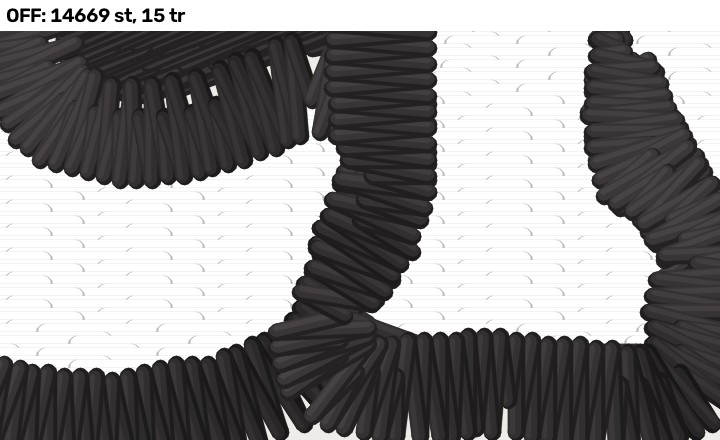
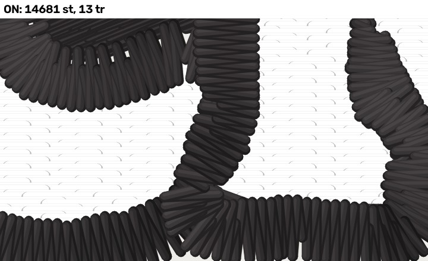

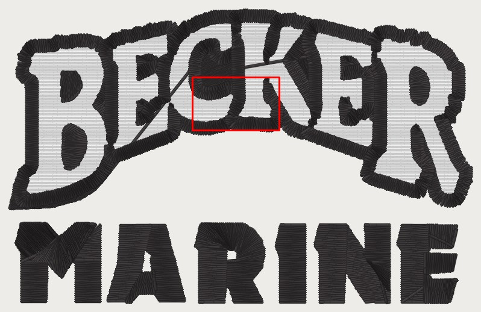
fill_section_cuts_first (PR #1193) · becker_beanie at 79.8 mm · engine 992770e3
⚠ A cfg.extra key. ON also turns on fill_section_travel (held 2026-10-27): the fill planner's orders are priced with the travel under rows still to come free, so a fewer-cut order is no longer refused for hidden stitches. It still may not cut more or lay more on finished fill. Both arms pin the rembg timeout at 900 s.
cuts inside one piece / all cuts. 27 needle points differ, 19 in this 18 x 11 mm crop at [-4.1, -16.1, 13.9, -5.1] mm (plan frame). Sets {"photo_prep_background_removal_timeout_s": 900, "extra": {"fill_section_cuts_first": true}}.
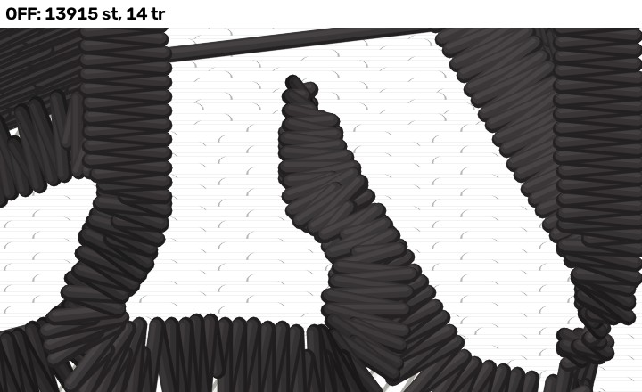

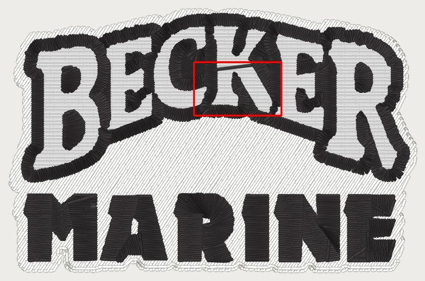
fill_section_cuts_first (PR #1193) · mfab_hat at 104.9 mm · engine 992770e3
⚠ A cfg.extra key. ON also turns on fill_section_travel (held 2026-10-27): the fill planner's orders are priced with the travel under rows still to come free, so a fewer-cut order is no longer refused for hidden stitches. It still may not cut more or lay more on finished fill. Both arms pin the rembg timeout at 900 s.
cuts inside one piece / all cuts. 122 needle points differ, 40 in this 18 x 11 mm crop at [-46.9, 3.1, -28.9, 14.1] mm (plan frame). Sets {"photo_prep_background_removal_timeout_s": 900, "extra": {"fill_section_cuts_first": true}}.

fill_section_cuts_first (PR #1193) · mfab_lc at 96.7 mm · engine 992770e3
⚠ A cfg.extra key. ON also turns on fill_section_travel (held 2026-10-27): the fill planner's orders are priced with the travel under rows still to come free, so a fewer-cut order is no longer refused for hidden stitches. It still may not cut more or lay more on finished fill. Both arms pin the rembg timeout at 900 s.
cuts inside one piece / all cuts. 2,441 needle points differ, 307 in this 18 x 11 mm crop at [2.5, -18.5, 20.5, -7.5] mm (plan frame). Sets {"photo_prep_background_removal_timeout_s": 900, "extra": {"fill_section_cuts_first": true}}.
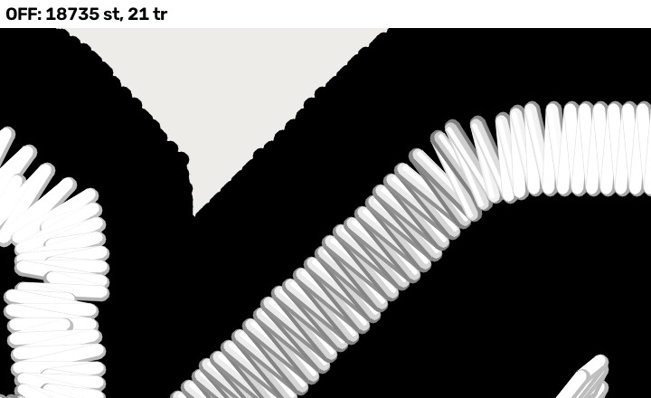


fill_section_cuts_first (PR #1193) · precision_drone at 62.6 mm · engine 992770e3
⚠ A cfg.extra key. ON also turns on fill_section_travel (held 2026-10-27): the fill planner's orders are priced with the travel under rows still to come free, so a fewer-cut order is no longer refused for hidden stitches. It still may not cut more or lay more on finished fill. Both arms pin the rembg timeout at 900 s.
cuts inside one piece / all cuts. 195 needle points differ, 150 in this 18 x 11 mm crop at [0.9, -8.1, 18.9, 2.9] mm (plan frame). Sets {"photo_prep_background_removal_timeout_s": 900, "extra": {"fill_section_cuts_first": true}}.
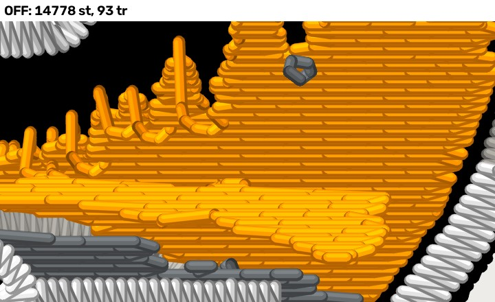

fill_section_cuts_first (PR #1193) · proseal_hat at 85.9 mm · engine 992770e3
⚠ A cfg.extra key. ON also turns on fill_section_travel (held 2026-10-27): the fill planner's orders are priced with the travel under rows still to come free, so a fewer-cut order is no longer refused for hidden stitches. It still may not cut more or lay more on finished fill. Both arms pin the rembg timeout at 900 s.
No change on this fixture (byte-identical DST).
fill_section_cuts_first (PR #1193) · proseal_beanie at 75.0 mm · engine 992770e3
⚠ A cfg.extra key. ON also turns on fill_section_travel (held 2026-10-27): the fill planner's orders are priced with the travel under rows still to come free, so a fewer-cut order is no longer refused for hidden stitches. It still may not cut more or lay more on finished fill. Both arms pin the rembg timeout at 900 s.
No change on this fixture (byte-identical DST).
fill_section_cuts_first (PR #1193) · hotel_fremont_hat at 92.5 mm · engine 992770e3
⚠ A cfg.extra key. ON also turns on fill_section_travel (held 2026-10-27): the fill planner's orders are priced with the travel under rows still to come free, so a fewer-cut order is no longer refused for hidden stitches. It still may not cut more or lay more on finished fill. Both arms pin the rembg timeout at 900 s.
No change on this fixture (byte-identical DST).
fill_section_cuts_first (PR #1193) · hotel_fremont_patch at 92.5 mm · engine 992770e3
⚠ A cfg.extra key. ON also turns on fill_section_travel (held 2026-10-27): the fill planner's orders are priced with the travel under rows still to come free, so a fewer-cut order is no longer refused for hidden stitches. It still may not cut more or lay more on finished fill. Both arms pin the rembg timeout at 900 s.
No change on this fixture (byte-identical DST).
fill_section_cuts_first (PR #1193) · gaulke_roofing_hat at 114.2 mm · engine 992770e3
⚠ A cfg.extra key. ON also turns on fill_section_travel (held 2026-10-27): the fill planner's orders are priced with the travel under rows still to come free, so a fewer-cut order is no longer refused for hidden stitches. It still may not cut more or lay more on finished fill. Both arms pin the rembg timeout at 900 s.
No change on this fixture (byte-identical DST).
fill_section_cuts_first (PR #1193) · gaulke_roofing_lc at 95.2 mm · engine 992770e3
⚠ A cfg.extra key. ON also turns on fill_section_travel (held 2026-10-27): the fill planner's orders are priced with the travel under rows still to come free, so a fewer-cut order is no longer refused for hidden stitches. It still may not cut more or lay more on finished fill. Both arms pin the rembg timeout at 900 s.
No change on this fixture (byte-identical DST).
fill_section_cuts_first (PR #1193) · bridge_hat at 63.3 mm · engine 992770e3
⚠ A cfg.extra key. ON also turns on fill_section_travel (held 2026-10-27): the fill planner's orders are priced with the travel under rows still to come free, so a fewer-cut order is no longer refused for hidden stitches. It still may not cut more or lay more on finished fill. Both arms pin the rembg timeout at 900 s.
cuts inside one piece / all cuts. 2 needle points differ, 2 in this 18 x 11 mm crop at [-2.9, 13.3, 15.1, 24.3] mm (plan frame). Sets {"photo_prep_background_removal_timeout_s": 900, "extra": {"fill_section_cuts_first": true}}.
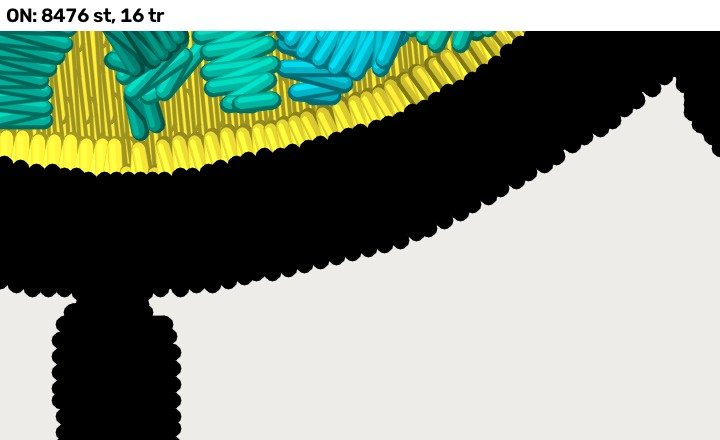

fill_section_cuts_first (PR #1193) · bridge_lc at 76.6 mm · engine 992770e3
⚠ A cfg.extra key. ON also turns on fill_section_travel (held 2026-10-27): the fill planner's orders are priced with the travel under rows still to come free, so a fewer-cut order is no longer refused for hidden stitches. It still may not cut more or lay more on finished fill. Both arms pin the rembg timeout at 900 s.
No change on this fixture (byte-identical DST).
fill_section_cuts_first (PR #1193) · tires_hat_3d at 114.3 mm · engine 992770e3
⚠ A cfg.extra key. ON also turns on fill_section_travel (held 2026-10-27): the fill planner's orders are priced with the travel under rows still to come free, so a fewer-cut order is no longer refused for hidden stitches. It still may not cut more or lay more on finished fill. Both arms pin the rembg timeout at 900 s.
No change on this fixture (byte-identical DST).